Esperar a que una figura haya llegado
task, dowait y do: deja que una figura termine su marcha antes de girarse o hablar, o que haga dos cosas a la vez.
Pasos#
- 1
Por qué. Un bloque
affectse ejecuta junto al script: el script no lo espera. Por eso Kyle y Rosh, cada uno en su bloque, ya caminan a la vez.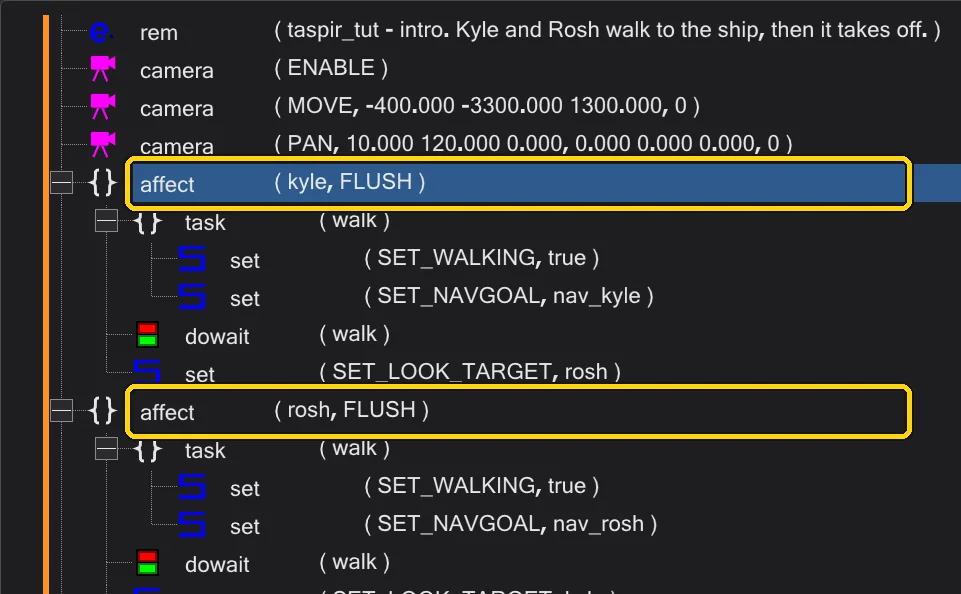
Dos bloques affect: se ejecutan en paralelo. - 2
El problema. Dentro de un bloque,
set ( SET_NAVGOAL )solo *inicia* la marcha; el comando siguiente sigue enseguida: la figura se giraría o hablaría aún caminando. La solución: mete la marcha en unatask. Insertatask, llámalawalky mueve dentroSET_WALKINGySET_NAVGOAL.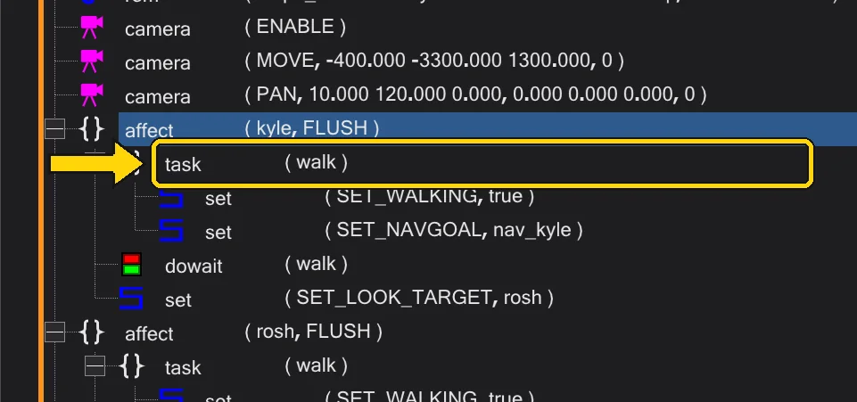
La tarea walk con la marcha dentro. - 3
dowait. Tras la tarea inserta
dowait ( "walk" ). Inicia la tarea y espera a que termine, hasta que la figura haya llegado. Todo lo que va después ocurre cuando la figura está parada.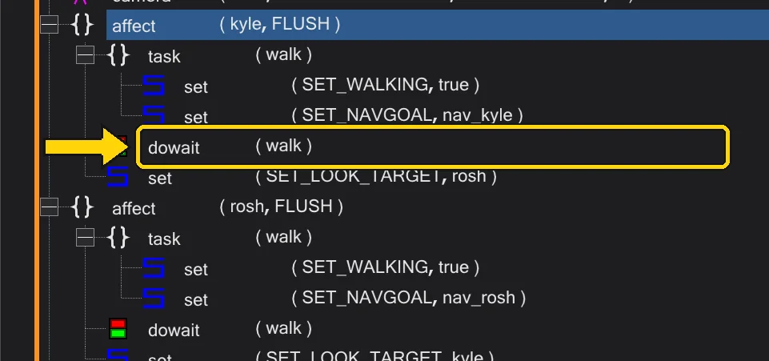
dowait espera a la marcha. - 4
Dos cosas a la vez.
doinicia una tarea y sigue enseguida. Dos tareas (walkylook) iniciadas con dosdo, y más tardewait ( "walk" )espera a la primera.
do, do y wait. - 5
Compruébalo en la línea de tiempo. Cambia a Misión y despliega la fila de la figura en la línea de tiempo: lo que sigue al
dowaitempieza donde termina la marcha.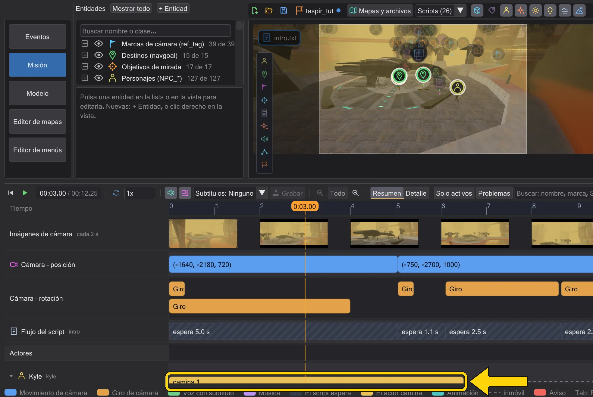
La marcha de Kyle en la línea de tiempo.


- 1
Dónde están los comandos. En Grafo, pulsa un nodo de script (el script abierto está seleccionado al principio). A la derecha, en Comandos de este script, se lista cada comando de ese script, con los bloques sangrados. Clic en una línea la selecciona, doble clic la edita, clic derecho abre el menú.
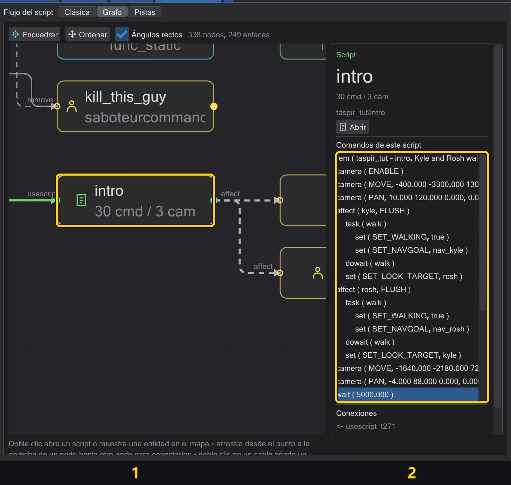
El nodo del script abierto (1) y sus comandos (2). - 2
Construye la tarea. Pulsa la línea
affect, haz doble clic entasken la lista Eventos y llámalawalken el editor. Luego pulsa la líneatasky haz doble clic ensetdos veces, paraSET_WALKINGySET_NAVGOAL.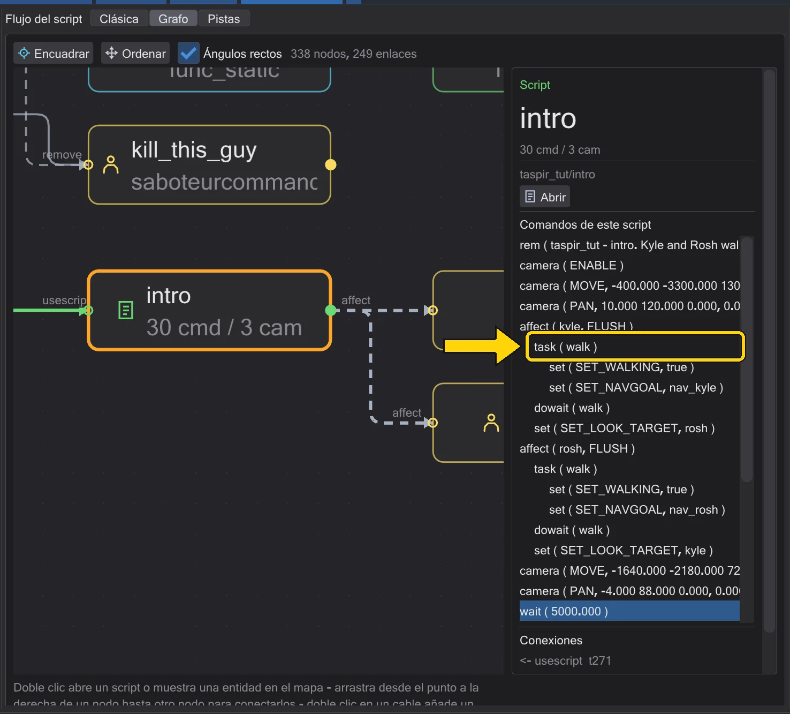
La tarea walk con la marcha dentro, en la lista. - 3
dowait detrás. Arrastra
dowaitde la lista Eventos a la líneatask: un comando soltado sobre una línea va *detrás* de ella, detrás de todo el bloque. Ponwalkcomo tarea en el editor.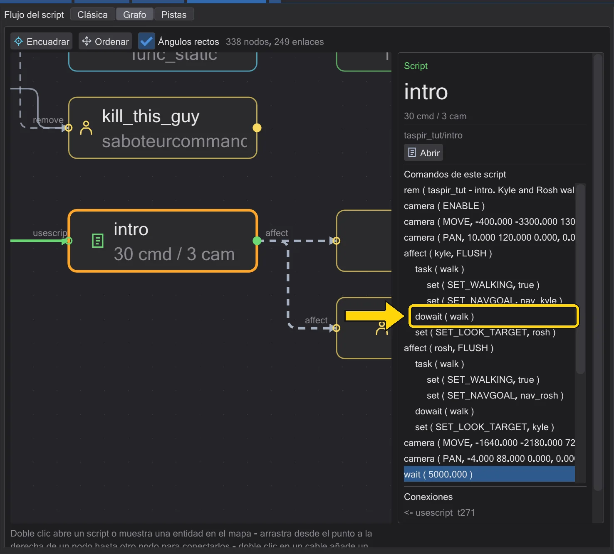
dowait walk tras la tarea. - 4
Compruébalo en Pistas. Cambia a Pistas: lo que sigue al
dowaitempieza donde termina la marcha.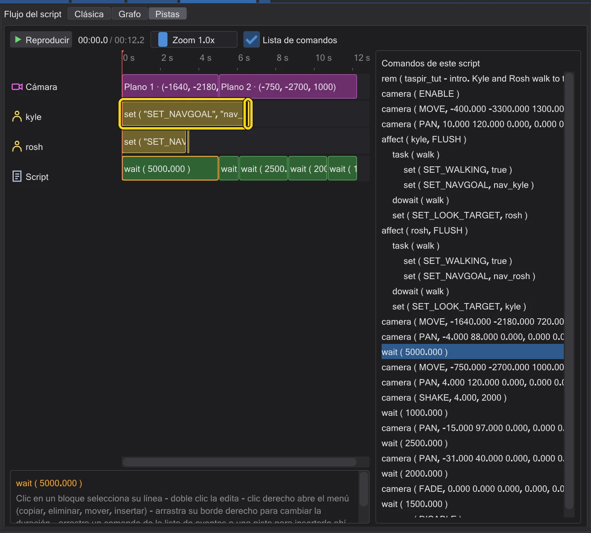
La fila de Kyle: la mirada empieza tras la marcha.


- 1
Dónde están los comandos. Pistas muestra el script en el tiempo: la cámara, una fila por figura, las esperas. A la derecha, Lista de comandos lista cada comando, también los que no ocupan tiempo, como
affect,taskodeclare.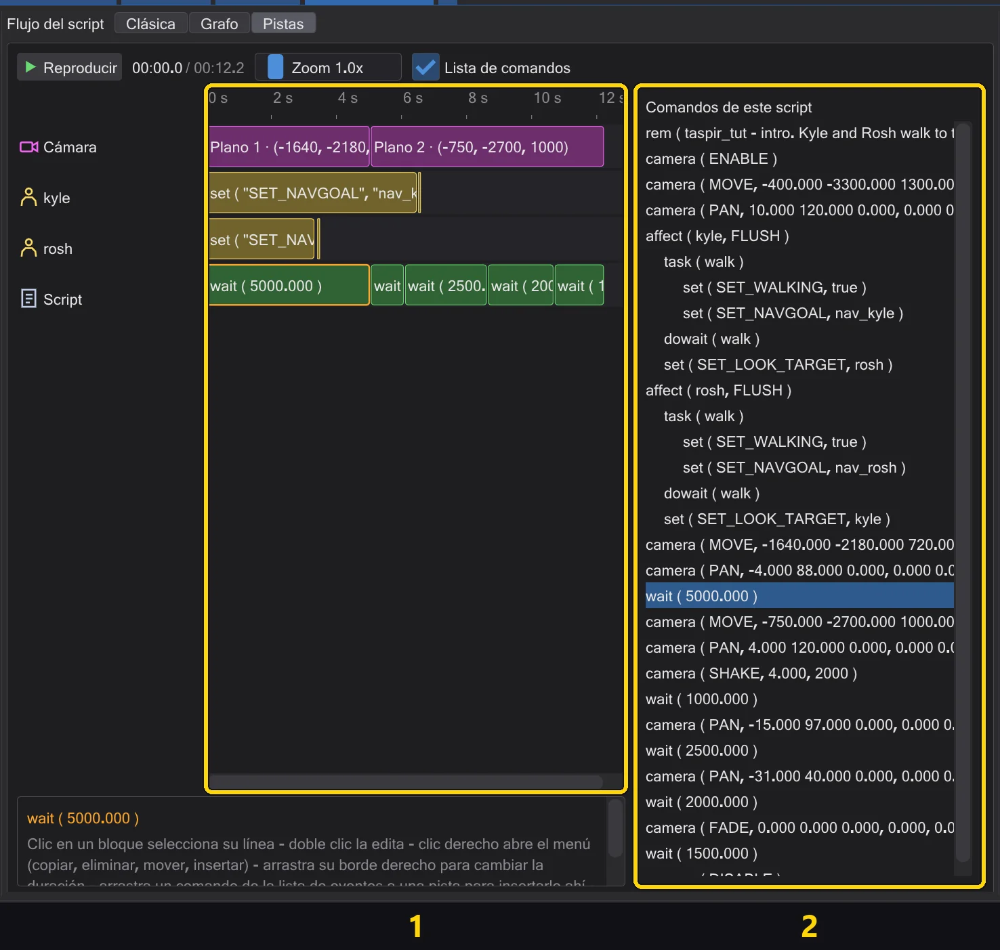
1: las filas de la línea de tiempo. 2: la lista de comandos. - 2
Construye la tarea en la lista. Una
taskno ocupa tiempo propio: constrúyela en la lista de comandos. Pulsa la líneaaffect, haz doble clic entasky llámalawalk; pulsa la líneatasky haz doble clic ensetdos veces paraSET_WALKINGySET_NAVGOAL.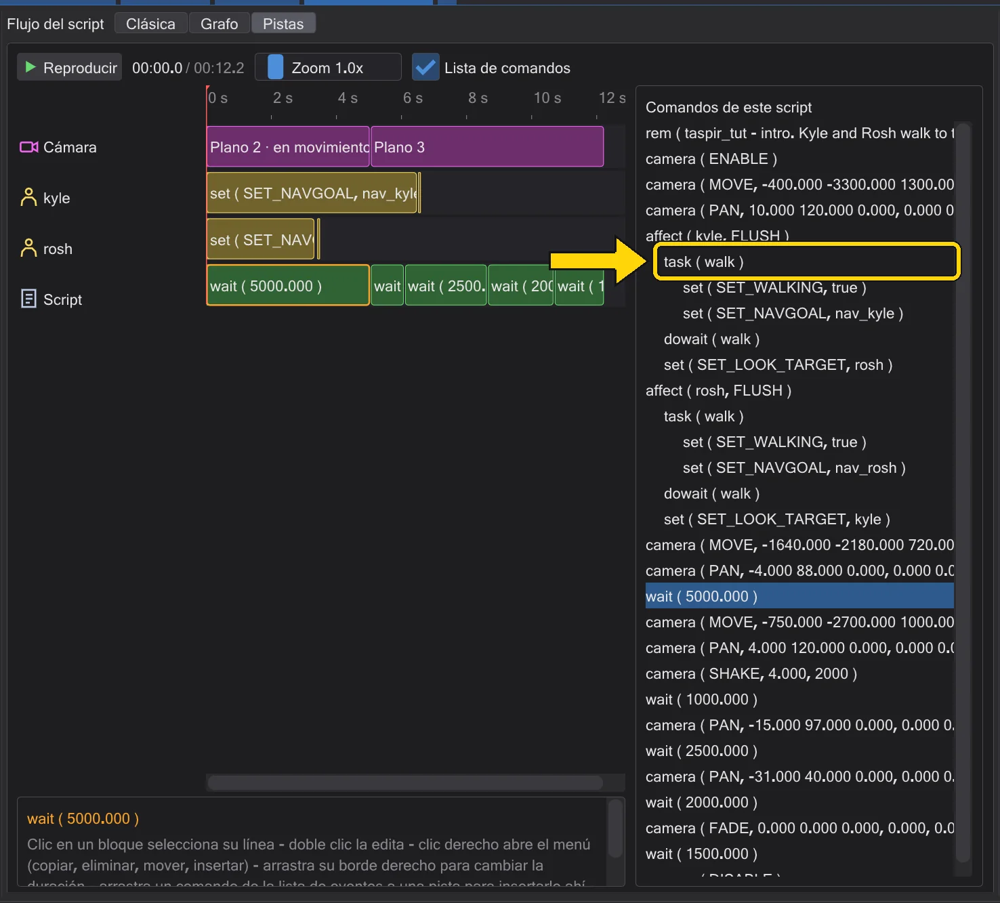
La tarea walk en la lista de comandos. - 4
Dos a la vez. Con
doen vez dedowait, el comando siguiente empieza enseguida: su bloque se mueve al inicio de la marcha.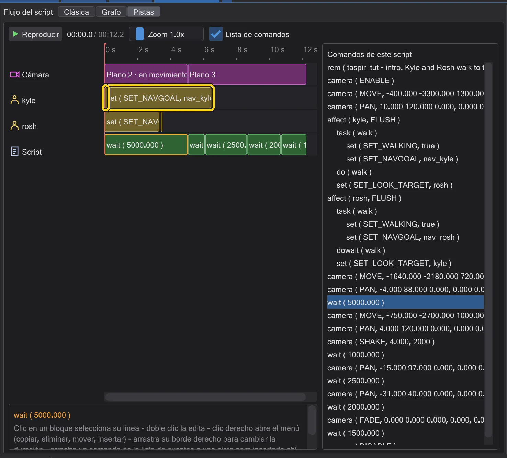
Con do: la mirada empieza con la marcha.


Bueno saberlo#
- Los comandos marcados con
*en su texto de ayuda (comoSET_NAVGOAL) solo terminan su tarea cuando la acción ha concluido: eso es lo que hace esperar adowait.